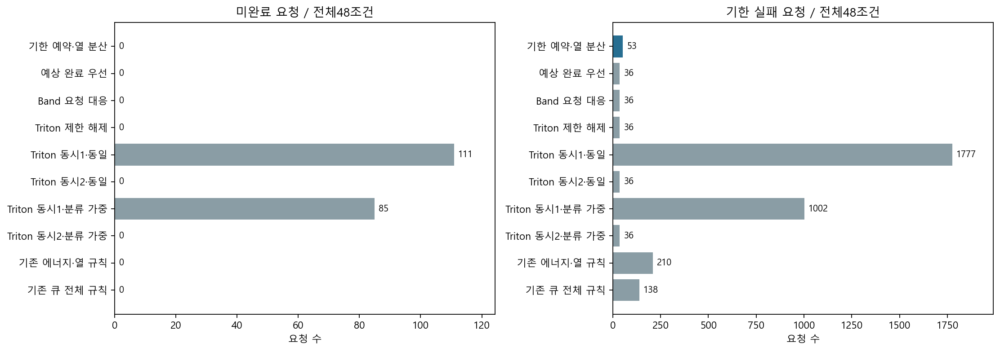
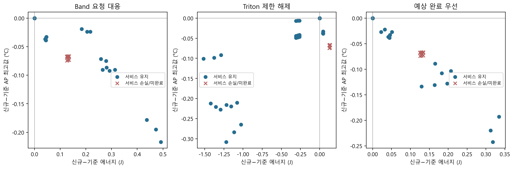
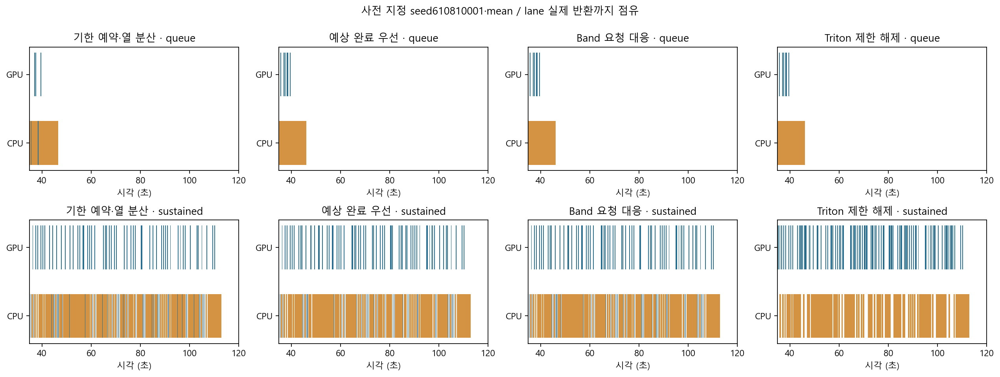
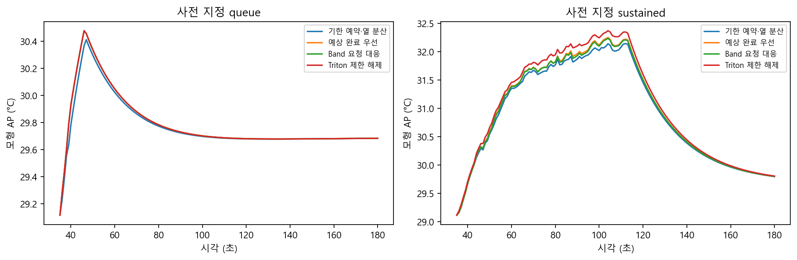
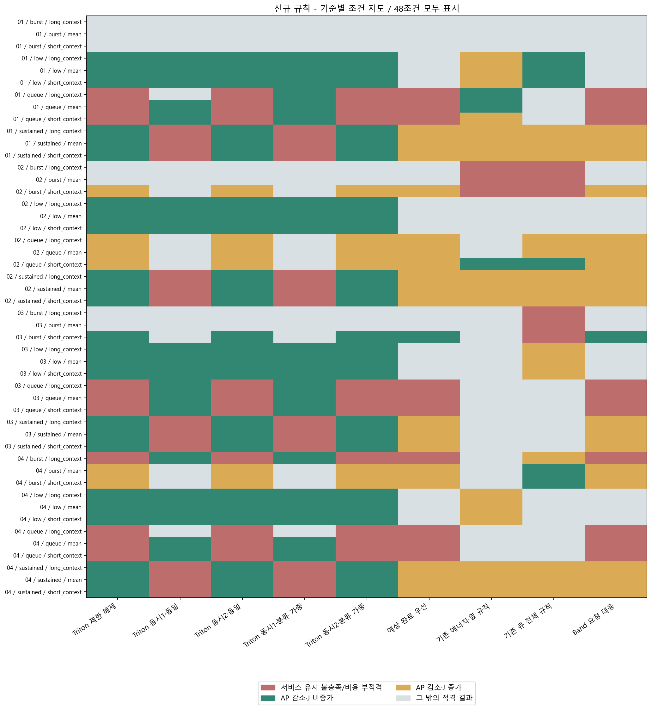

48신규 환경 + 432재사용 = 480행 · 기존 공개 개발 자료 · 실측 기반 모형 결과
3,168요청 전량 완료. 주평가24조건에서 강한 Triton 대응 대비 공동 개선24조건, Band/EFT 대비0조건.
전체 일반 기한 실패는 신규53건, Band/EFT/강한 Triton 각각36건입니다. 전체 우위로 판정하지 않습니다. 완료량·기한·긴급P95를 먼저 비교합니다. AP는 표면온도가 아니며 작은 차이는 실제 개선 증거가 아닙니다. partial 비용과 계산 불가는 원본 CSV에서 구분합니다.
한국어 보고서 · 전체480행 · 432쌍 비교 · 판단 진단
| 기준 규칙 | 서비스 유지/48 | 열 감소·J 비증가/48 | 공동 감소/48 | 주평가 서비스 유지/24 | 주평가 AP 차이(°C) | 주평가 J 차이 |
|---|---|---|---|---|---|---|
| Triton 제한 해제 | 38 | 25 | 24 | 24 | -0.119788 | -0.770236 |
| Triton 동시1·동일 | 36 | 20 | 20 | 12 | -0.0352629 | -0.285551 |
| Triton 동시2·동일 | 38 | 25 | 24 | 24 | -0.119788 | -0.770236 |
| Triton 동시1·분류 가중 | 36 | 21 | 21 | 12 | -0.0352629 | -0.285551 |
| Triton 동시2·분류 가중 | 38 | 25 | 24 | 24 | -0.119788 | -0.770236 |
| Band 요청 대응 | 38 | 1 | 0 | 24 | -0.0484704 | 0.154012 |
| 예상 완료 우선 | 38 | 1 | 0 | 24 | -0.0593506 | 0.0881759 |
| 기존 에너지·열 규칙 | 45 | 3 | 1 | 24 | -0.0744419 | 0.547749 |
| 기존 큐 전체 규칙 | 42 | 6 | 0 | 24 | -0.0396285 | 0.339595 |
| seed | 부하 | 문맥 | 전체 fallback | 탐색 실패 | overrun | 저장 계획 선택 | 새 탐색 선택 | 내부 cap 초과 | 최종 J 잔액 | 최대 판단(ms) |
|---|---|---|---|---|---|---|---|---|---|---|
| 610810001 | low | mean | 0 | 0 | 0 | 0 | 0 | 0 | -2.96754e-09 | 1.958 |
| 610810001 | low | short_context | 0 | 0 | 0 | 0 | 0 | 0 | 0.00927968 | 3.0129 |
| 610810001 | low | long_context | 23 | 23 | 0 | 0 | 0 | 0 | -0.00878585 | 5.9644 |
| 610810001 | queue | mean | 132 | 130 | 2 | 0 | 0 | 13 | 4.23881e-10 | 147.259 |
| 610810001 | queue | short_context | 130 | 130 | 0 | 2 | 0 | 13 | 0.0129008 | 88.2246 |
| 610810001 | queue | long_context | 173 | 150 | 23 | 0 | 0 | 14 | -0.012838 | 49.5834 |
| 610810001 | burst | mean | 87 | 82 | 5 | 0 | 0 | 1 | 3.32705e-10 | 150.324 |
| 610810001 | burst | short_context | 82 | 82 | 0 | 0 | 0 | 1 | 0.0173839 | 39.0444 |
| 610810001 | burst | long_context | 172 | 140 | 32 | 0 | 0 | 3 | -0.0168901 | 92.7997 |
| 610810001 | sustained | mean | 156 | 147 | 9 | 0 | 1 | 10 | 0.00459867 | 13.0019 |
| 610810001 | sustained | short_context | 149 | 149 | 0 | 33 | 1 | 10 | 0.175463 | 18.9608 |
| 610810001 | sustained | long_context | 677 | 593 | 84 | 0 | 0 | 11 | -0.173279 | 14.0549 |
| 610810002 | low | mean | 0 | 0 | 0 | 0 | 0 | 0 | -2.96757e-09 | 1.8248 |
| 610810002 | low | short_context | 0 | 0 | 0 | 0 | 0 | 0 | 0.00927968 | 1.9212 |
| 610810002 | low | long_context | 23 | 23 | 0 | 0 | 0 | 0 | -0.00878585 | 2.7121 |
| 610810002 | queue | mean | 94 | 92 | 2 | 0 | 0 | 10 | 3.15964e-10 | 44.9417 |
| 610810002 | queue | short_context | 92 | 92 | 0 | 2 | 0 | 10 | 0.0171477 | 78.107 |
| 610810002 | queue | long_context | 169 | 140 | 29 | 0 | 0 | 10 | -0.0170848 | 67.2424 |
| 610810002 | burst | mean | 79 | 74 | 5 | 0 | 0 | 1 | 5.07555e-10 | 42.8065 |
| 610810002 | burst | short_context | 74 | 74 | 0 | 3 | 0 | 1 | 0.0171685 | 96.6672 |
| 610810002 | burst | long_context | 170 | 139 | 31 | 0 | 0 | 1 | -0.0168901 | 48.1007 |
| 610810002 | sustained | mean | 189 | 165 | 24 | 0 | 0 | 12 | -1.88919e-09 | 62.3083 |
| 610810002 | sustained | short_context | 165 | 165 | 0 | 40 | 0 | 12 | 0.155769 | 34.4966 |
| 610810002 | sustained | long_context | 743 | 649 | 94 | 0 | 0 | 12 | -0.15485 | 13.1421 |
| 610810003 | low | mean | 0 | 0 | 0 | 0 | 0 | 0 | -2.96754e-09 | 2.6928 |
| 610810003 | low | short_context | 0 | 0 | 0 | 0 | 0 | 0 | 0.00927968 | 2.4567 |
| 610810003 | low | long_context | 23 | 23 | 0 | 0 | 0 | 0 | -0.00878585 | 3.5682 |
| 610810003 | queue | mean | 97 | 94 | 3 | 0 | 0 | 12 | 4.23768e-10 | 78.2749 |
| 610810003 | queue | short_context | 94 | 94 | 0 | 2 | 0 | 12 | 0.0129008 | 85.7446 |
| 610810003 | queue | long_context | 169 | 145 | 24 | 0 | 0 | 12 | -0.012838 | 45.9674 |
| 610810003 | burst | mean | 63 | 59 | 4 | 0 | 0 | 1 | 5.0764e-10 | 93.8877 |
| 610810003 | burst | short_context | 59 | 59 | 0 | 1 | 0 | 1 | 0.0173839 | 41.0326 |
| 610810003 | burst | long_context | 169 | 139 | 30 | 0 | 0 | 1 | -0.0168901 | 79.7594 |
| 610810003 | sustained | mean | 106 | 93 | 13 | 9 | 2 | 7 | -1.54182e-09 | 13.424 |
| 610810003 | sustained | short_context | 70 | 70 | 0 | 46 | 0 | 5 | 0.160652 | 7.7962 |
| 610810003 | sustained | long_context | 726 | 626 | 100 | 0 | 0 | 7 | -0.162425 | 67.7521 |
| 610810004 | low | mean | 0 | 0 | 0 | 0 | 0 | 0 | -2.96757e-09 | 3.947 |
| 610810004 | low | short_context | 0 | 0 | 0 | 0 | 0 | 0 | 0.00927968 | 2.557 |
| 610810004 | low | long_context | 23 | 23 | 0 | 0 | 0 | 0 | -0.00878585 | 2.7448 |
| 610810004 | queue | mean | 124 | 124 | 0 | 0 | 0 | 11 | 4.23796e-10 | 46.9109 |
| 610810004 | queue | short_context | 124 | 124 | 0 | 1 | 0 | 11 | 0.0131163 | 88.7764 |
| 610810004 | queue | long_context | 170 | 147 | 23 | 0 | 0 | 11 | -0.012838 | 47.1614 |
| 610810004 | burst | mean | 115 | 111 | 4 | 0 | 0 | 4 | 3.96682e-10 | 82.8151 |
| 610810004 | burst | short_context | 111 | 111 | 0 | 2 | 0 | 4 | 0.0181193 | 85.0978 |
| 610810004 | burst | long_context | 171 | 147 | 24 | 0 | 0 | 15 | -0.0149355 | 42.7836 |
| 610810004 | sustained | mean | 276 | 257 | 19 | 5 | 1 | 20 | -1.07235e-09 | 66.0208 |
| 610810004 | sustained | short_context | 250 | 250 | 0 | 45 | 2 | 18 | 0.145706 | 14.5562 |
| 610810004 | sustained | long_context | 868 | 758 | 110 | 0 | 0 | 22 | -0.135709 | 64.5245 |
| seed | 부하 | 문맥 | 기준 규칙 | 서비스 유지 | 공동 감소 | AP 차이(°C) | J 차이 | 긴급 P95 차이(ms) | 일반 평균 차이(ms) |
|---|---|---|---|---|---|---|---|---|---|
| 610810001 | low | mean | Triton 제한 해제 | True | True | -0.0477626 | -0.285551 | -137.875 | 0 |
| 610810001 | low | mean | Triton 동시1·동일 | True | True | -0.0477626 | -0.285551 | -137.875 | 0 |
| 610810001 | low | mean | Triton 동시2·동일 | True | True | -0.0477626 | -0.285551 | -137.875 | 0 |
| 610810001 | low | mean | Triton 동시1·분류 가중 | True | True | -0.0477626 | -0.285551 | -137.875 | 0 |
| 610810001 | low | mean | Triton 동시2·분류 가중 | True | True | -0.0477626 | -0.285551 | -137.875 | 0 |
| 610810001 | low | short_context | Triton 제한 해제 | True | True | -0.046483 | -0.263637 | -130.429 | 0 |
| 610810001 | low | short_context | Triton 동시1·동일 | True | True | -0.046483 | -0.263637 | -130.429 | 0 |
| 610810001 | low | short_context | Triton 동시2·동일 | True | True | -0.046483 | -0.263637 | -130.429 | 0 |
| 610810001 | low | short_context | Triton 동시1·분류 가중 | True | True | -0.046483 | -0.263637 | -130.429 | 0 |
| 610810001 | low | short_context | Triton 동시2·분류 가중 | True | True | -0.046483 | -0.263637 | -130.429 | 0 |
| 610810001 | low | long_context | Triton 제한 해제 | True | True | -0.0490471 | -0.307465 | -145.321 | 0 |
| 610810001 | low | long_context | Triton 동시1·동일 | True | True | -0.0490471 | -0.307465 | -145.321 | 0 |
| 610810001 | low | long_context | Triton 동시2·동일 | True | True | -0.0490471 | -0.307465 | -145.321 | 0 |
| 610810001 | low | long_context | Triton 동시1·분류 가중 | True | True | -0.0490471 | -0.307465 | -145.321 | 0 |
| 610810001 | low | long_context | Triton 동시2·분류 가중 | True | True | -0.0490471 | -0.307465 | -145.321 | 0 |
| 610810001 | queue | mean | Triton 제한 해제 | False | False | -0.0665703 | 0.129741 | -96.8035 | 394.683 |
| 610810001 | queue | mean | Triton 동시1·동일 | True | True | -0.00494492 | -0.415292 | -903.828 | -1061.72 |
| 610810001 | queue | mean | Triton 동시2·동일 | False | False | -0.0665703 | 0.129741 | -96.8035 | 394.683 |
| 610810001 | queue | mean | Triton 동시1·분류 가중 | True | True | -0.00578148 | -0.415292 | -361.946 | -1095.59 |
| 610810001 | queue | mean | Triton 동시2·분류 가중 | False | False | -0.0665703 | 0.129741 | -96.8035 | 394.683 |
| 610810001 | queue | short_context | Triton 제한 해제 | False | False | -0.0662343 | 0.134224 | -89.0801 | 395.848 |
| 610810001 | queue | short_context | Triton 동시1·동일 | True | True | -0.00563679 | -0.396999 | -869.319 | -1023.66 |
| 610810001 | queue | short_context | Triton 동시2·동일 | False | False | -0.0662343 | 0.134224 | -89.0801 | 395.848 |
| 610810001 | queue | short_context | Triton 동시1·분류 가중 | True | True | -0.00644963 | -0.396999 | -352.053 | -1056.67 |
| 610810001 | queue | short_context | Triton 동시2·분류 가중 | False | False | -0.0662343 | 0.134224 | -89.0801 | 395.848 |
| 610810001 | queue | long_context | Triton 제한 해제 | False | False | -0.066988 | 0.125688 | -104.527 | 394.683 |
| 610810001 | queue | long_context | Triton 동시1·동일 | True | False | 0.000547157 | -0.433153 | -938.145 | -1098.62 |
| 610810001 | queue | long_context | Triton 동시2·동일 | False | False | -0.066988 | 0.125688 | -104.527 | 394.683 |
| 610810001 | queue | long_context | Triton 동시1·분류 가중 | True | True | -0.000313215 | -0.433153 | -371.723 | -1133.35 |
| 610810001 | queue | long_context | Triton 동시2·분류 가중 | False | False | -0.066988 | 0.125688 | -104.527 | 394.683 |
| 610810001 | burst | mean | Triton 제한 해제 | True | False | 0 | 0 | 0 | 0 |
| 610810001 | burst | mean | Triton 동시1·동일 | True | False | 0.0589952 | -0.545032 | -1678.89 | -1456.41 |
| 610810001 | burst | mean | Triton 동시2·동일 | True | False | 0 | 0 | 0 | 0 |
| 610810001 | burst | mean | Triton 동시1·분류 가중 | True | False | 0.0577435 | -0.545032 | -435.416 | -1507.21 |
| 610810001 | burst | mean | Triton 동시2·분류 가중 | True | False | 0 | 0 | 0 | 0 |
| 610810001 | burst | short_context | Triton 제한 해제 | True | False | 0 | 0 | 0 | 0 |
| 610810001 | burst | short_context | Triton 동시1·동일 | True | False | 0.0580091 | -0.531223 | -1651.38 | -1419.51 |
| 610810001 | burst | short_context | Triton 동시2·동일 | True | False | 0 | 0 | 0 | 0 |
| 610810001 | burst | short_context | Triton 동시1·분류 가중 | True | False | 0.0567929 | -0.531223 | -409.353 | -1469.02 |
| 610810001 | burst | short_context | Triton 동시2·분류 가중 | True | False | 0 | 0 | 0 | 0 |
| 610810001 | burst | long_context | Triton 제한 해제 | True | False | 0 | 0 | 0 | 0 |
| 610810001 | burst | long_context | Triton 동시1·동일 | True | False | 0.0648647 | -0.558841 | -1706.17 | -1493.31 |
| 610810001 | burst | long_context | Triton 동시2·동일 | True | False | 0 | 0 | 0 | 0 |
| 610810001 | burst | long_context | Triton 동시1·분류 가중 | True | False | 0.0635773 | -0.558841 | -461.325 | -1545.4 |
| 610810001 | burst | long_context | Triton 동시2·분류 가중 | True | False | 0 | 0 | 0 | 0 |
| 610810001 | sustained | mean | Triton 제한 해제 | True | True | -0.227265 | -1.29258 | 0 | 37.8953 |
| 610810001 | sustained | mean | Triton 동시1·동일 | False | False | 계산 불가 | -3.70588 | -12244.4 | -5331.42 |
| 610810001 | sustained | mean | Triton 동시2·동일 | True | True | -0.227265 | -1.29258 | 0 | 37.8953 |
| 610810001 | sustained | mean | Triton 동시1·분류 가중 | False | False | 계산 불가 | -3.41319 | -577.324 | -8415.79 |
| 610810001 | sustained | mean | Triton 동시2·분류 가중 | True | True | -0.227265 | -1.29258 | 0 | 37.8953 |
| 610810001 | sustained | short_context | Triton 제한 해제 | True | True | -0.219294 | -1.15479 | 0 | 38.5055 |
| 610810001 | sustained | short_context | Triton 동시1·동일 | False | False | 계산 불가 | -3.96301 | -11898.3 | -5012.65 |
| 610810001 | sustained | short_context | Triton 동시2·동일 | True | True | -0.219294 | -1.15479 | 0 | 38.5055 |
| 610810001 | sustained | short_context | Triton 동시1·분류 가중 | False | False | 계산 불가 | -3.74906 | -583.747 | -7822.16 |
| 610810001 | sustained | short_context | Triton 동시2·분류 가중 | True | True | -0.219294 | -1.15479 | 0 | 38.5055 |
| 610810001 | sustained | long_context | Triton 제한 해제 | True | True | -0.211798 | -1.42177 | 0 | 38.5156 |
| 610810001 | sustained | long_context | Triton 동시1·동일 | False | False | 계산 불가 | -3.44593 | -12810.5 | -5643.64 |
| 610810001 | sustained | long_context | Triton 동시2·동일 | True | True | -0.211798 | -1.42177 | 0 | 38.5156 |
| 610810001 | sustained | long_context | Triton 동시1·분류 가중 | False | False | 계산 불가 | -3.0708 | -609.861 | -9010.39 |
| 610810001 | sustained | long_context | Triton 동시2·분류 가중 | True | True | -0.211798 | -1.42177 | 0 | 38.5156 |
| 610810002 | low | mean | Triton 제한 해제 | True | True | -0.0428363 | -0.285551 | -137.875 | 0 |
| 610810002 | low | mean | Triton 동시1·동일 | True | True | -0.0428363 | -0.285551 | -137.875 | 0 |
| 610810002 | low | mean | Triton 동시2·동일 | True | True | -0.0428363 | -0.285551 | -137.875 | 0 |
| 610810002 | low | mean | Triton 동시1·분류 가중 | True | True | -0.0428363 | -0.285551 | -137.875 | 0 |
| 610810002 | low | mean | Triton 동시2·분류 가중 | True | True | -0.0428363 | -0.285551 | -137.875 | 0 |
| 610810002 | low | short_context | Triton 제한 해제 | True | True | -0.0416435 | -0.263637 | -130.429 | 0 |
| 610810002 | low | short_context | Triton 동시1·동일 | True | True | -0.0416435 | -0.263637 | -130.429 | 0 |
| 610810002 | low | short_context | Triton 동시2·동일 | True | True | -0.0416435 | -0.263637 | -130.429 | 0 |
| 610810002 | low | short_context | Triton 동시1·분류 가중 | True | True | -0.0416435 | -0.263637 | -130.429 | 0 |
| 610810002 | low | short_context | Triton 동시2·분류 가중 | True | True | -0.0416435 | -0.263637 | -130.429 | 0 |
| 610810002 | low | long_context | Triton 제한 해제 | True | True | -0.0440295 | -0.307465 | -145.321 | 0 |
| 610810002 | low | long_context | Triton 동시1·동일 | True | True | -0.0440295 | -0.307465 | -145.321 | 0 |
| 610810002 | low | long_context | Triton 동시2·동일 | True | True | -0.0440295 | -0.307465 | -145.321 | 0 |
| 610810002 | low | long_context | Triton 동시1·분류 가중 | True | True | -0.0440295 | -0.307465 | -145.321 | 0 |
| 610810002 | low | long_context | Triton 동시2·분류 가중 | True | True | -0.0440295 | -0.307465 | -145.321 | 0 |
| 610810002 | queue | mean | Triton 제한 해제 | True | False | -0.0383039 | 0.0437148 | -100.136 | 111.191 |
| 610810002 | queue | mean | Triton 동시1·동일 | True | False | 0.0251374 | -0.501317 | -1234.31 | -1294.41 |
| 610810002 | queue | mean | Triton 동시2·동일 | True | False | -0.0383039 | 0.0437148 | -100.136 | 111.191 |
| 610810002 | queue | mean | Triton 동시1·분류 가중 | True | False | 0.0247103 | -0.501317 | -696.147 | -1311.35 |
| 610810002 | queue | mean | Triton 동시2·분류 가중 | True | False | -0.0383039 | 0.0437148 | -100.136 | 111.191 |
| 610810002 | queue | short_context | Triton 제한 해제 | True | False | -0.0386755 | 0.0445976 | -92.4126 | 111.229 |
| 610810002 | queue | short_context | Triton 동시1·동일 | True | False | 0.0236717 | -0.486625 | -1191.36 | -1258.76 |
| 610810002 | queue | short_context | Triton 동시2·동일 | True | False | -0.0386755 | 0.0445976 | -92.4126 | 111.229 |
| 610810002 | queue | short_context | Triton 동시1·분류 가중 | True | False | 0.0232567 | -0.486625 | -661.637 | -1275.27 |
| 610810002 | queue | short_context | Triton 동시2·분류 가중 | True | False | -0.0386755 | 0.0445976 | -92.4126 | 111.229 |
| 610810002 | queue | long_context | Triton 제한 해제 | True | False | -0.0376521 | 0.0434415 | -107.859 | 113.601 |
| 610810002 | queue | long_context | Triton 동시1·동일 | True | False | 0.0313515 | -0.5154 | -1277.04 | -1344.98 |
| 610810002 | queue | long_context | Triton 동시2·동일 | True | False | -0.0376521 | 0.0434415 | -107.859 | 113.601 |
| 610810002 | queue | long_context | Triton 동시1·분류 가중 | True | False | 0.0300641 | -0.5154 | -486.736 | -1397.07 |
| 610810002 | queue | long_context | Triton 동시2·분류 가중 | True | False | -0.0376521 | 0.0434415 | -107.859 | 113.601 |
| 610810002 | burst | mean | Triton 제한 해제 | True | False | 0 | 0 | 0 | 0 |
| 610810002 | burst | mean | Triton 동시1·동일 | True | False | 0.0588563 | -0.545032 | -999.105 | -1473.34 |
| 610810002 | burst | mean | Triton 동시2·동일 | True | False | 0 | 0 | 0 | 0 |
| 610810002 | burst | mean | Triton 동시1·분류 가중 | True | False | 0.0577106 | -0.545032 | -377.368 | -1524.15 |
| 610810002 | burst | mean | Triton 동시2·분류 가중 | True | False | 0 | 0 | 0 | 0 |
| 610810002 | burst | short_context | Triton 제한 해제 | True | False | -0.000207313 | 0.000215492 | 0 | 1.76765 |
| 610810002 | burst | short_context | Triton 동시1·동일 | True | False | 0.0576849 | -0.531007 | -997.659 | -1434.25 |
| 610810002 | burst | short_context | Triton 동시2·동일 | True | False | -0.000207313 | 0.000215492 | 0 | 1.76765 |
| 610810002 | burst | short_context | Triton 동시1·분류 가중 | True | False | 0.0565708 | -0.531007 | -376.645 | -1483.76 |
| 610810002 | burst | short_context | Triton 동시2·분류 가중 | True | False | -0.000207313 | 0.000215492 | 0 | 1.76765 |
| 610810002 | burst | long_context | Triton 제한 해제 | True | False | 0 | 0 | 0 | 0 |
| 610810002 | burst | long_context | Triton 동시1·동일 | True | False | 0.0647027 | -0.558841 | -1000.47 | -1510.67 |
| 610810002 | burst | long_context | Triton 동시2·동일 | True | False | 0 | 0 | 0 | 0 |
| 610810002 | burst | long_context | Triton 동시1·분류 가중 | True | False | 0.0635254 | -0.558841 | -378.053 | -1562.76 |
| 610810002 | burst | long_context | Triton 동시2·분류 가중 | True | False | 0 | 0 | 0 | 0 |
| 610810002 | sustained | mean | Triton 제한 해제 | True | True | -0.215591 | -1.21614 | 0 | 47.3128 |
| 610810002 | sustained | mean | Triton 동시1·동일 | False | False | 계산 불가 | -3.81268 | -10604.2 | -4608.78 |
| 610810002 | sustained | mean | Triton 동시2·동일 | True | True | -0.215591 | -1.21614 | 0 | 47.3128 |
| 610810002 | sustained | mean | Triton 동시1·분류 가중 | False | False | 계산 불가 | -3.51999 | -600.62 | -7616.24 |
| 610810002 | sustained | mean | Triton 동시2·분류 가중 | True | True | -0.215591 | -1.21614 | 0 | 47.3128 |
| 610810002 | sustained | short_context | Triton 제한 해제 | True | True | -0.210446 | -1.07664 | 0 | 48.0434 |
| 610810002 | sustained | short_context | Triton 동시1·동일 | False | False | 계산 불가 | -4.0387 | -10011.1 | -4329.67 |
| 610810002 | sustained | short_context | Triton 동시2·동일 | True | True | -0.210446 | -1.07664 | 0 | 48.0434 |
| 610810002 | sustained | short_context | Triton 동시1·분류 가중 | False | False | 계산 불가 | -3.82474 | -589.762 | -7075.01 |
| 610810002 | sustained | short_context | Triton 동시2·분류 가중 | True | True | -0.210446 | -1.07664 | 0 | 48.0434 |
| 610810002 | sustained | long_context | Triton 제한 해제 | True | True | -0.220625 | -1.35634 | 0 | 47.9399 |
| 610810002 | sustained | long_context | Triton 동시1·동일 | False | False | 계산 불가 | -3.59282 | -11278.9 | -4880.61 |
| 610810002 | sustained | long_context | Triton 동시2·동일 | True | True | -0.220625 | -1.35634 | 0 | 47.9399 |
| 610810002 | sustained | long_context | Triton 동시1·분류 가중 | False | False | 계산 불가 | -3.2177 | -583.558 | -8165.88 |
| 610810002 | sustained | long_context | Triton 동시2·분류 가중 | True | True | -0.220625 | -1.35634 | 0 | 47.9399 |
| 610810003 | low | mean | Triton 제한 해제 | True | True | -0.00642885 | -0.285551 | -137.875 | 0 |
| 610810003 | low | mean | Triton 동시1·동일 | True | True | -0.00642885 | -0.285551 | -137.875 | 0 |
| 610810003 | low | mean | Triton 동시2·동일 | True | True | -0.00642885 | -0.285551 | -137.875 | 0 |
| 610810003 | low | mean | Triton 동시1·분류 가중 | True | True | -0.00642885 | -0.285551 | -137.875 | 0 |
| 610810003 | low | mean | Triton 동시2·분류 가중 | True | True | -0.00642885 | -0.285551 | -137.875 | 0 |
| 610810003 | low | short_context | Triton 제한 해제 | True | True | -0.00624985 | -0.263637 | -130.429 | 0 |
| 610810003 | low | short_context | Triton 동시1·동일 | True | True | -0.00624985 | -0.263637 | -130.429 | 0 |
| 610810003 | low | short_context | Triton 동시2·동일 | True | True | -0.00624985 | -0.263637 | -130.429 | 0 |
| 610810003 | low | short_context | Triton 동시1·분류 가중 | True | True | -0.00624985 | -0.263637 | -130.429 | 0 |
| 610810003 | low | short_context | Triton 동시2·분류 가중 | True | True | -0.00624985 | -0.263637 | -130.429 | 0 |
| 610810003 | low | long_context | Triton 제한 해제 | True | True | -0.00660793 | -0.307465 | -145.321 | 0 |
| 610810003 | low | long_context | Triton 동시1·동일 | True | True | -0.00660793 | -0.307465 | -145.321 | 0 |
| 610810003 | low | long_context | Triton 동시2·동일 | True | True | -0.00660793 | -0.307465 | -145.321 | 0 |
| 610810003 | low | long_context | Triton 동시1·분류 가중 | True | True | -0.00660793 | -0.307465 | -145.321 | 0 |
| 610810003 | low | long_context | Triton 동시2·분류 가중 | True | True | -0.00660793 | -0.307465 | -145.321 | 0 |
| 610810003 | queue | mean | Triton 제한 해제 | False | False | -0.0737988 | 0.129741 | -108.149 | 330.433 |
| 610810003 | queue | mean | Triton 동시1·동일 | True | True | -0.00918322 | -0.415292 | -1148.27 | -1075.17 |
| 610810003 | queue | mean | Triton 동시2·동일 | False | False | -0.0737988 | 0.129741 | -108.149 | 330.433 |
| 610810003 | queue | mean | Triton 동시1·분류 가중 | True | True | -0.00961041 | -0.415292 | -526.536 | -1092.1 |
| 610810003 | queue | mean | Triton 동시2·분류 가중 | False | False | -0.0737988 | 0.129741 | -108.149 | 330.433 |
| 610810003 | queue | short_context | Triton 제한 해제 | False | False | -0.0733182 | 0.134224 | -100.426 | 331.638 |
| 610810003 | queue | short_context | Triton 동시1·동일 | True | True | -0.0098355 | -0.396999 | -1113.04 | -1038.35 |
| 610810003 | queue | short_context | Triton 동시2·동일 | False | False | -0.0733182 | 0.134224 | -100.426 | 331.638 |
| 610810003 | queue | short_context | Triton 동시1·분류 가중 | True | True | -0.0102505 | -0.396999 | -492.026 | -1054.86 |
| 610810003 | queue | short_context | Triton 동시2·분류 가중 | False | False | -0.0733182 | 0.134224 | -100.426 | 331.638 |
| 610810003 | queue | long_context | Triton 제한 해제 | False | False | -0.0743596 | 0.125688 | -115.873 | 330.433 |
| 610810003 | queue | long_context | Triton 동시1·동일 | True | True | -0.00372758 | -0.433153 | -1183.27 | -1110.78 |
| 610810003 | queue | long_context | Triton 동시2·동일 | False | False | -0.0743596 | 0.125688 | -115.873 | 330.433 |
| 610810003 | queue | long_context | Triton 동시1·분류 가중 | True | True | -0.004167 | -0.433153 | -560.852 | -1128.15 |
| 610810003 | queue | long_context | Triton 동시2·분류 가중 | False | False | -0.0743596 | 0.125688 | -115.873 | 330.433 |
| 610810003 | burst | mean | Triton 제한 해제 | True | False | 0 | 0 | 0 | 0 |
| 610810003 | burst | mean | Triton 동시1·동일 | True | False | 0.0600098 | -0.545032 | -813.019 | -1473.34 |
| 610810003 | burst | mean | Triton 동시2·동일 | True | False | 0 | 0 | 0 | 0 |
| 610810003 | burst | mean | Triton 동시1·분류 가중 | True | False | 0.0591732 | -0.545032 | -362.533 | -1507.21 |
| 610810003 | burst | mean | Triton 동시2·분류 가중 | True | False | 0 | 0 | 0 | 0 |
| 610810003 | burst | short_context | Triton 제한 해제 | True | False | -6.27756e-05 | 0 | 0 | 0.522261 |
| 610810003 | burst | short_context | Triton 동시1·동일 | True | False | 0.058961 | -0.531223 | -786.233 | -1435.49 |
| 610810003 | burst | short_context | Triton 동시2·동일 | True | False | -6.27756e-05 | 0 | 0 | 0.522261 |
| 610810003 | burst | short_context | Triton 동시1·분류 가중 | True | False | 0.0581482 | -0.531223 | -352.641 | -1468.5 |
| 610810003 | burst | short_context | Triton 동시2·분류 가중 | True | False | -6.27756e-05 | 0 | 0 | 0.522261 |
| 610810003 | burst | long_context | Triton 제한 해제 | True | False | 0 | 0 | 0 | 0 |
| 610810003 | burst | long_context | Triton 동시1·동일 | True | False | 0.0658778 | -0.558841 | -839.612 | -1510.67 |
| 610810003 | burst | long_context | Triton 동시2·동일 | True | False | 0 | 0 | 0 | 0 |
| 610810003 | burst | long_context | Triton 동시1·분류 가중 | True | False | 0.0650174 | -0.558841 | -372.311 | -1545.4 |
| 610810003 | burst | long_context | Triton 동시2·분류 가중 | True | False | 0 | 0 | 0 | 0 |
| 610810003 | sustained | mean | Triton 제한 해제 | True | True | -0.0987103 | -1.37688 | 0 | 44.7315 |
| 610810003 | sustained | mean | Triton 동시1·동일 | False | False | 계산 불가 | -4.03254 | -11215.1 | -4567.06 |
| 610810003 | sustained | mean | Triton 동시2·동일 | True | True | -0.0987103 | -1.37688 | 0 | 44.7315 |
| 610810003 | sustained | mean | Triton 동시1·분류 가중 | False | False | 계산 불가 | -3.73985 | -583.199 | -7486.68 |
| 610810003 | sustained | mean | Triton 동시2·분류 가중 | True | True | -0.0987103 | -1.37688 | 0 | 44.7315 |
| 610810003 | sustained | short_context | Triton 제한 해제 | True | True | -0.0917765 | -1.28607 | 0 | 42.8882 |
| 610810003 | sustained | short_context | Triton 동시1·동일 | False | False | 계산 불가 | -4.33479 | -10666.1 | -4277.48 |
| 610810003 | sustained | short_context | Triton 동시2·동일 | True | True | -0.0917765 | -1.28607 | 0 | 42.8882 |
| 610810003 | sustained | short_context | Triton 동시1·분류 가중 | False | False | 계산 불가 | -4.12083 | -599.058 | -6896.74 |
| 610810003 | sustained | short_context | Triton 동시2·분류 가중 | True | True | -0.0917765 | -1.28607 | 0 | 42.8882 |
| 610810003 | sustained | long_context | Triton 제한 해제 | True | True | -0.100679 | -1.51507 | 0 | 45.3581 |
| 610810003 | sustained | long_context | Triton 동시1·동일 | False | False | 계산 불가 | -3.78324 | -11761.6 | -4849 |
| 610810003 | sustained | long_context | Triton 동시2·동일 | True | True | -0.100679 | -1.51507 | 0 | 45.3581 |
| 610810003 | sustained | long_context | Triton 동시1·분류 가중 | False | False | 계산 불가 | -3.40812 | -587.857 | -8071.17 |
| 610810003 | sustained | long_context | Triton 동시2·분류 가중 | True | True | -0.100679 | -1.51507 | 0 | 45.3581 |
| 610810004 | low | mean | Triton 제한 해제 | True | True | -0.0440217 | -0.285551 | -137.875 | 0 |
| 610810004 | low | mean | Triton 동시1·동일 | True | True | -0.0440217 | -0.285551 | -137.875 | 0 |
| 610810004 | low | mean | Triton 동시2·동일 | True | True | -0.0440217 | -0.285551 | -137.875 | 0 |
| 610810004 | low | mean | Triton 동시1·분류 가중 | True | True | -0.0440217 | -0.285551 | -137.875 | 0 |
| 610810004 | low | mean | Triton 동시2·분류 가중 | True | True | -0.0440217 | -0.285551 | -137.875 | 0 |
| 610810004 | low | short_context | Triton 제한 해제 | True | True | -0.042796 | -0.263637 | -130.429 | 0 |
| 610810004 | low | short_context | Triton 동시1·동일 | True | True | -0.042796 | -0.263637 | -130.429 | 0 |
| 610810004 | low | short_context | Triton 동시2·동일 | True | True | -0.042796 | -0.263637 | -130.429 | 0 |
| 610810004 | low | short_context | Triton 동시1·분류 가중 | True | True | -0.042796 | -0.263637 | -130.429 | 0 |
| 610810004 | low | short_context | Triton 동시2·분류 가중 | True | True | -0.042796 | -0.263637 | -130.429 | 0 |
| 610810004 | low | long_context | Triton 제한 해제 | True | True | -0.0452479 | -0.307465 | -145.321 | 0 |
| 610810004 | low | long_context | Triton 동시1·동일 | True | True | -0.0452479 | -0.307465 | -145.321 | 0 |
| 610810004 | low | long_context | Triton 동시2·동일 | True | True | -0.0452479 | -0.307465 | -145.321 | 0 |
| 610810004 | low | long_context | Triton 동시1·분류 가중 | True | True | -0.0452479 | -0.307465 | -145.321 | 0 |
| 610810004 | low | long_context | Triton 동시2·분류 가중 | True | True | -0.0452479 | -0.307465 | -145.321 | 0 |
| 610810004 | queue | mean | Triton 제한 해제 | False | False | -0.0676046 | 0.129741 | -196.92 | 385.505 |
| 610810004 | queue | mean | Triton 동시1·동일 | True | True | -0.00228641 | -0.415292 | -661.912 | -1003.16 |
| 610810004 | queue | mean | Triton 동시2·동일 | False | False | -0.0676046 | 0.129741 | -196.92 | 385.505 |
| 610810004 | queue | mean | Triton 동시1·분류 가중 | True | True | -0.00271359 | -0.415292 | -603.663 | -1020.1 |
| 610810004 | queue | mean | Triton 동시2·분류 가중 | False | False | -0.0676046 | 0.129741 | -196.92 | 385.505 |
| 610810004 | queue | short_context | Triton 제한 해제 | False | False | -0.067233 | 0.134008 | -181.473 | 386.107 |
| 610810004 | queue | short_context | Triton 동시1·동일 | True | True | -0.00305568 | -0.397215 | -618.956 | -967.376 |
| 610810004 | queue | short_context | Triton 동시2·동일 | False | False | -0.067233 | 0.134008 | -181.473 | 386.107 |
| 610810004 | queue | short_context | Triton 동시1·분류 가중 | True | True | -0.00305568 | -0.397215 | -618.956 | -967.376 |
| 610810004 | queue | short_context | Triton 동시2·분류 가중 | False | False | -0.067233 | 0.134008 | -181.473 | 386.107 |
| 610810004 | queue | long_context | Triton 제한 해제 | False | False | -0.0680591 | 0.125688 | -212.367 | 385.505 |
| 610810004 | queue | long_context | Triton 동시1·동일 | True | False | 0.00328292 | -0.433153 | -704.637 | -1038.35 |
| 610810004 | queue | long_context | Triton 동시2·동일 | False | False | -0.0680591 | 0.125688 | -212.367 | 385.505 |
| 610810004 | queue | long_context | Triton 동시1·분류 가중 | True | False | 0.0028435 | -0.433153 | -629.572 | -1055.71 |
| 610810004 | queue | long_context | Triton 동시2·분류 가중 | False | False | -0.0680591 | 0.125688 | -212.367 | 385.505 |
| 610810004 | burst | mean | Triton 제한 해제 | True | False | -0.0330032 | 0.0457415 | -5.68842 | 163.944 |
| 610810004 | burst | mean | Triton 동시1·동일 | True | False | 0.0242683 | -0.499291 | -1533.85 | -1309.4 |
| 610810004 | burst | mean | Triton 동시2·동일 | True | False | -0.0330032 | 0.0457415 | -5.68842 | 163.944 |
| 610810004 | burst | mean | Triton 동시1·분류 가중 | True | False | 0.0219218 | -0.499291 | -302.147 | -1411.01 |
| 610810004 | burst | mean | Triton 동시2·분류 가중 | True | False | -0.0330032 | 0.0457415 | -5.68842 | 163.944 |
| 610810004 | burst | short_context | Triton 제한 해제 | True | False | -0.0337125 | 0.0450061 | -5.68842 | 158.417 |
| 610810004 | burst | short_context | Triton 동시1·동일 | True | False | 0.0226358 | -0.486217 | -1515.51 | -1277.6 |
| 610810004 | burst | short_context | Triton 동시2·동일 | True | False | -0.0337125 | 0.0450061 | -5.68842 | 158.417 |
| 610810004 | burst | short_context | Triton 동시1·분류 가중 | True | False | 0.0207696 | -0.486217 | -393.896 | -1360.13 |
| 610810004 | burst | short_context | Triton 동시2·분류 가중 | True | False | -0.0337125 | 0.0450061 | -5.68842 | 158.417 |
| 610810004 | burst | long_context | Triton 제한 해제 | False | False | -0.0687568 | 0.130281 | -5.68842 | 390.88 |
| 610810004 | burst | long_context | Triton 동시1·동일 | True | True | -0.00567982 | -0.428561 | -1552.03 | -1119.79 |
| 610810004 | burst | long_context | Triton 동시2·동일 | False | False | -0.0687568 | 0.130281 | -5.68842 | 390.88 |
| 610810004 | burst | long_context | Triton 동시1·분류 가중 | True | True | -0.00809171 | -0.428561 | -307.189 | -1223.98 |
| 610810004 | burst | long_context | Triton 동시2·분류 가중 | False | False | -0.0687568 | 0.130281 | -5.68842 | 390.88 |
| 610810004 | sustained | mean | Triton 제한 해제 | True | True | -0.283464 | -1.11566 | 0 | 132.794 |
| 610810004 | sustained | mean | Triton 동시1·동일 | False | False | 계산 불가 | -3.56302 | -10748.7 | -5947.98 |
| 610810004 | sustained | mean | Triton 동시2·동일 | True | True | -0.283464 | -1.11566 | 0 | 132.794 |
| 610810004 | sustained | mean | Triton 동시1·분류 가중 | False | False | 계산 불가 | -3.19716 | -608.752 | -8735.21 |
| 610810004 | sustained | mean | Triton 동시2·분류 가중 | True | True | -0.283464 | -1.11566 | 0 | 132.794 |
| 610810004 | sustained | short_context | Triton 제한 해제 | True | True | -0.264342 | -1.02782 | 0 | 111.481 |
| 610810004 | sustained | short_context | Triton 동시1·동일 | False | False | 계산 불가 | -3.85333 | -10171.3 | -5658.59 |
| 610810004 | sustained | short_context | Triton 동시2·동일 | True | True | -0.264342 | -1.02782 | 0 | 111.481 |
| 610810004 | sustained | short_context | Triton 동시1·분류 가중 | False | False | 계산 불가 | -3.56806 | -571.409 | -8153.42 |
| 610810004 | sustained | short_context | Triton 동시2·분류 가중 | True | True | -0.264342 | -1.02782 | 0 | 111.481 |
| 610810004 | sustained | long_context | Triton 제한 해제 | True | True | -0.307768 | -1.21928 | 0 | 170.041 |
| 610810004 | sustained | long_context | Triton 동시1·동일 | False | False | 계산 불가 | -3.29645 | -10899 | -6216.53 |
| 610810004 | sustained | long_context | Triton 동시2·동일 | True | True | -0.307768 | -1.21928 | 0 | 170.041 |
| 610810004 | sustained | long_context | Triton 동시1·분류 가중 | False | False | 계산 불가 | -2.84629 | -577.849 | -9168.09 |
| 610810004 | sustained | long_context | Triton 동시2·분류 가중 | True | True | -0.307768 | -1.21928 | 0 | 170.041 |
| 610810001 | low | mean | 예상 완료 우선 | True | False | 0 | 0 | 0 | 0 |
| 610810001 | low | mean | 기존 에너지·열 규칙 | True | False | -0.0177368 | 0.0432468 | -1233.05 | -1250.15 |
| 610810001 | low | mean | 기존 큐 전체 규칙 | True | False | -0.00729281 | 0 | 0 | -179.176 |
| 610810001 | low | mean | Band 요청 대응 | True | False | 0 | 0 | 0 | 0 |
| 610810001 | low | short_context | 예상 완료 우선 | True | False | 0 | 0 | 0 | 0 |
| 610810001 | low | short_context | 기존 에너지·열 규칙 | True | False | -0.0173135 | 0.0445976 | -1233.05 | -1250.11 |
| 610810001 | low | short_context | 기존 큐 전체 규칙 | True | False | -0.00728214 | 7.1293e-10 | 0 | -179.136 |
| 610810001 | low | short_context | Band 요청 대응 | True | False | 0 | 0 | 0 | 0 |
| 610810001 | low | long_context | 예상 완료 우선 | True | False | 0 | 0 | 0 | 0 |
| 610810001 | low | long_context | 기존 에너지·열 규칙 | True | False | -0.0181655 | 0.0418961 | -1233.05 | -1250.18 |
| 610810001 | low | long_context | 기존 큐 전체 규칙 | True | False | -0.00730291 | 7.1293e-10 | 0 | -179.214 |
| 610810001 | low | long_context | Band 요청 대응 | True | False | 0 | 0 | 0 | 0 |
| 610810001 | queue | mean | 예상 완료 우선 | False | False | -0.0665703 | 0.129741 | -96.8035 | 394.683 |
| 610810001 | queue | mean | 기존 에너지·열 규칙 | True | False | -0.00905835 | 0 | -267.778 | -251.262 |
| 610810001 | queue | mean | 기존 큐 전체 규칙 | True | False | 0 | 0 | 0 | 0 |
| 610810001 | queue | mean | Band 요청 대응 | False | False | -0.0665703 | 0.129741 | -96.8035 | 394.683 |
| 610810001 | queue | short_context | 예상 완료 우선 | False | False | -0.0662343 | 0.134224 | -89.0801 | 395.848 |
| 610810001 | queue | short_context | 기존 에너지·열 규칙 | True | False | -0.0103488 | 0.000430983 | -275.225 | -252.708 |
| 610810001 | queue | short_context | 기존 큐 전체 규칙 | True | False | 3.36624e-06 | 0.000430984 | 0 | 1.16504 |
| 610810001 | queue | short_context | Band 요청 대응 | False | False | -0.0662343 | 0.134224 | -89.0801 | 395.848 |
| 610810001 | queue | long_context | 예상 완료 우선 | False | False | -0.066988 | 0.125688 | -104.527 | 394.683 |
| 610810001 | queue | long_context | 기존 에너지·열 규칙 | True | False | -0.00783257 | -1.28495e-10 | -260.332 | -248.789 |
| 610810001 | queue | long_context | 기존 큐 전체 규칙 | True | False | 0 | 0 | 0 | 0 |
| 610810001 | queue | long_context | Band 요청 대응 | False | False | -0.066988 | 0.125688 | -104.527 | 394.683 |
| 610810001 | burst | mean | 예상 완료 우선 | True | False | 0 | 0 | 0 | 0 |
| 610810001 | burst | mean | 기존 에너지·열 규칙 | True | False | 0.0727381 | -0.129741 | -733.236 | -1085.73 |
| 610810001 | burst | mean | 기존 큐 전체 규칙 | True | False | 0.0474948 | -0.0864937 | -818.02 | -1160.85 |
| 610810001 | burst | mean | Band 요청 대응 | True | False | 0 | 0 | 0 | 0 |
| 610810001 | burst | short_context | 예상 완료 우선 | True | False | 0 | 0 | 0 | 0 |
| 610810001 | burst | short_context | 기존 에너지·열 규칙 | True | False | 0.0720988 | -0.133793 | -756.129 | -1088.34 |
| 610810001 | burst | short_context | 기존 큐 전체 규칙 | True | False | 0.0474312 | -0.0891951 | -840.913 | -1163.47 |
| 610810001 | burst | short_context | Band 요청 대응 | True | False | 0 | 0 | 0 | 0 |
| 610810001 | burst | long_context | 예상 완료 우선 | True | False | 0 | 0 | 0 | 0 |
| 610810001 | burst | long_context | 기존 에너지·열 규칙 | True | False | 0.0734558 | -0.125688 | -710.344 | -1083.26 |
| 610810001 | burst | long_context | 기존 큐 전체 규칙 | True | False | 0.0476369 | -0.0837923 | -795.127 | -1158.38 |
| 610810001 | burst | long_context | Band 요청 대응 | True | False | 0 | 0 | 0 | 0 |
| 610810001 | sustained | mean | 예상 완료 우선 | True | False | -0.107979 | 0.182765 | 0 | 37.8953 |
| 610810001 | sustained | mean | 기존 에너지·열 규칙 | True | False | -0.267046 | 1.21976 | -1808.64 | -3136.69 |
| 610810001 | sustained | mean | 기존 큐 전체 규칙 | True | False | -0.174821 | 0.815942 | -786.953 | -2965.19 |
| 610810001 | sustained | mean | Band 요청 대응 | True | False | -0.0906479 | 0.265321 | 0 | 37.8953 |
| 610810001 | sustained | short_context | 예상 완료 우선 | True | False | -0.103329 | 0.207338 | 0 | 38.5055 |
| 610810001 | sustained | short_context | 기존 에너지·열 규칙 | True | False | -0.276185 | 1.2471 | -1685.9 | -3132.41 |
| 610810001 | sustained | short_context | 기존 큐 전체 규칙 | True | False | -0.171265 | 0.743592 | -786.23 | -3075 |
| 610810001 | sustained | short_context | Band 요청 대응 | True | False | -0.0864797 | 0.280661 | 0 | 38.5055 |
| 610810001 | sustained | long_context | 예상 완료 우선 | True | False | -0.0891888 | 0.16506 | 0 | 38.2733 |
| 610810001 | sustained | long_context | 기존 에너지·열 규칙 | True | False | -0.22781 | 1.15274 | -1807.31 | -3064.44 |
| 610810001 | sustained | long_context | 기존 큐 전체 규칙 | True | False | -0.152502 | 0.725499 | -787.638 | -3077.69 |
| 610810001 | sustained | long_context | Band 요청 대응 | True | False | -0.0713815 | 0.258673 | 0 | 38.5156 |
| 610810002 | low | mean | 예상 완료 우선 | True | False | 0 | 0 | 0 | 0 |
| 610810002 | low | mean | 기존 에너지·열 규칙 | True | False | 0.0200745 | 2.01027e-09 | -1190.65 | -1409.52 |
| 610810002 | low | mean | 기존 큐 전체 규칙 | True | False | 0.0179735 | 0 | -136.368 | -180.556 |
| 610810002 | low | mean | Band 요청 대응 | True | False | 0 | 0 | 0 | 0 |
| 610810002 | low | short_context | 예상 완료 우선 | True | False | 0 | 0 | 0 | 0 |
| 610810002 | low | short_context | 기존 에너지·열 규칙 | True | False | 0.0201162 | 1.75328e-09 | -1189.93 | -1409.44 |
| 610810002 | low | short_context | 기존 큐 전체 규칙 | True | False | 0.0180304 | 5.84436e-10 | -135.645 | -180.556 |
| 610810002 | low | short_context | Band 요청 대응 | True | False | 0 | 0 | 0 | 0 |
| 610810002 | low | long_context | 예상 완료 우선 | True | False | 0 | 0 | 0 | 0 |
| 610810002 | low | long_context | 기존 에너지·열 규칙 | True | False | 0.0200351 | 1.75331e-09 | -1191.34 | -1409.59 |
| 610810002 | low | long_context | 기존 큐 전체 규칙 | True | False | 0.0179197 | 5.84436e-10 | -137.052 | -180.556 |
| 610810002 | low | long_context | Band 요청 대응 | True | False | 0 | 0 | 0 | 0 |
| 610810002 | queue | mean | 예상 완료 우선 | True | False | -0.0383039 | 0.0437148 | -100.136 | 111.191 |
| 610810002 | queue | mean | 기존 에너지·열 규칙 | True | False | 0.00110637 | -0.0427789 | -264.359 | -559.232 |
| 610810002 | queue | mean | 기존 큐 전체 규칙 | True | False | -0.0135198 | 0.000467995 | 0 | -254.184 |
| 610810002 | queue | mean | Band 요청 대응 | True | False | -0.0383039 | 0.0437148 | -100.136 | 111.191 |
| 610810002 | queue | short_context | 예상 완료 우선 | True | False | -0.0386755 | 0.0445976 | -92.4126 | 111.229 |
| 610810002 | queue | short_context | 기존 에너지·열 규칙 | True | True | -0.000433522 | -0.0445976 | -271.805 | -561.444 |
| 610810002 | queue | short_context | 기존 큐 전체 규칙 | True | False | -0.00445651 | 0 | -92.2448 | -91.6823 |
| 610810002 | queue | short_context | Band 요청 대응 | True | False | -0.0386755 | 0.0445976 | -92.4126 | 111.229 |
| 610810002 | queue | long_context | 예상 완료 우선 | True | False | -0.0365928 | 0.0410963 | -107.859 | 108.504 |
| 610810002 | queue | long_context | 기존 에너지·열 규칙 | True | False | 0.00294082 | -0.0403507 | -256.913 | -554.692 |
| 610810002 | queue | long_context | 기존 큐 전체 규칙 | True | False | -0.0134382 | 0.0015454 | 0 | -249.301 |
| 610810002 | queue | long_context | Band 요청 대응 | True | False | -0.0365928 | 0.0410963 | -107.859 | 108.504 |
| 610810002 | burst | mean | 예상 완료 우선 | True | False | 0 | 0 | 0 | 0 |
| 610810002 | burst | mean | 기존 에너지·열 규칙 | False | False | 0.0594652 | -0.0864937 | 36.6779 | -940.573 |
| 610810002 | burst | mean | 기존 큐 전체 규칙 | False | False | 0.0219604 | -0.0644517 | 81.5143 | -628.34 |
| 610810002 | burst | mean | Band 요청 대응 | True | False | 0 | 0 | 0 | 0 |
| 610810002 | burst | short_context | 예상 완료 우선 | True | False | -0.000207313 | 0.000215492 | 0 | 1.76765 |
| 610810002 | burst | short_context | 기존 에너지·열 규칙 | False | False | 0.0592222 | -0.0889796 | 21.5084 | -941.055 |
| 610810002 | burst | short_context | 기존 큐 전체 규칙 | False | False | 0.0213063 | -0.0643628 | 81.5143 | -626.452 |
| 610810002 | burst | short_context | Band 요청 대응 | True | False | -0.000207313 | 0.000215492 | 0 | 1.76765 |
| 610810002 | burst | long_context | 예상 완료 우선 | True | False | 0 | 0 | 0 | 0 |
| 610810002 | burst | long_context | 기존 에너지·열 규칙 | False | False | 0.0595785 | -0.0837923 | 51.8474 | -938.443 |
| 610810002 | burst | long_context | 기존 큐 전체 규칙 | False | False | 0.0225774 | -0.0643824 | 81.5143 | -625.412 |
| 610810002 | burst | long_context | Band 요청 대응 | True | False | 0 | 0 | 0 | 0 |
| 610810002 | sustained | mean | 예상 완료 우선 | True | False | -0.131002 | 0.164024 | 0 | 47.3128 |
| 610810002 | sustained | mean | 기존 에너지·열 규칙 | True | False | -0.0915136 | 0.986984 | -1237.9 | -3004.54 |
| 610810002 | sustained | mean | 기존 큐 전체 규칙 | True | False | -0.0666555 | 0.846761 | -1512.59 | -3126.92 |
| 610810002 | sustained | mean | Band 요청 대응 | True | False | -0.0922278 | 0.292176 | 0 | 47.3128 |
| 610810002 | sustained | short_context | 예상 완료 우선 | True | False | -0.128213 | 0.197603 | 0 | 48.0434 |
| 610810002 | sustained | short_context | 기존 에너지·열 규칙 | True | False | -0.112142 | 0.977893 | -1237.9 | -2991.66 |
| 610810002 | sustained | short_context | 기존 큐 전체 규칙 | True | False | -0.110722 | 0.746078 | -1429.58 | -3049.03 |
| 610810002 | sustained | short_context | Band 요청 대응 | True | False | -0.090642 | 0.313312 | 0 | 48.0434 |
| 610810002 | sustained | long_context | 예상 완료 우선 | True | False | -0.13368 | 0.129739 | 0 | 47.9399 |
| 610810002 | sustained | long_context | 기존 에너지·열 규칙 | True | False | -0.0684827 | 0.94545 | -1237.9 | -3033.85 |
| 610810002 | sustained | long_context | 기존 큐 전체 규칙 | True | False | -0.0702489 | 0.8527 | -1518.7 | -3126.92 |
| 610810002 | sustained | long_context | Band 요청 대응 | True | False | -0.0750671 | 0.278833 | 0 | 47.9399 |
| 610810003 | low | mean | 예상 완료 우선 | True | False | 0 | 0 | 0 | 0 |
| 610810003 | low | mean | 기존 에너지·열 규칙 | True | False | 0.0106848 | 0.0432469 | -1247.9 | -1493.41 |
| 610810003 | low | mean | 기존 큐 전체 규칙 | True | False | -0.0854339 | 0.0614874 | -137.875 | -1607.06 |
| 610810003 | low | mean | Band 요청 대응 | True | False | 0 | 0 | 0 | 0 |
| 610810003 | low | short_context | 예상 완료 우선 | True | False | 0 | 0 | 0 | 0 |
| 610810003 | low | short_context | 기존 에너지·열 규칙 | True | False | 0.0114558 | 0.0445976 | -1247.9 | -1493.37 |
| 610810003 | low | short_context | 기존 큐 전체 규칙 | True | False | -0.0840289 | 0.0658439 | -130.429 | -1606.77 |
| 610810003 | low | short_context | Band 요청 대응 | True | False | 0 | 0 | 0 | 0 |
| 610810003 | low | long_context | 예상 완료 우선 | True | False | 0 | 0 | 0 | 0 |
| 610810003 | low | long_context | 기존 에너지·열 규칙 | True | False | 0.00990787 | 0.0418961 | -1247.9 | -1493.45 |
| 610810003 | low | long_context | 기존 큐 전체 규칙 | True | False | -0.0868312 | 0.0570965 | -145.321 | -1607.32 |
| 610810003 | low | long_context | Band 요청 대응 | True | False | 0 | 0 | 0 | 0 |
| 610810003 | queue | mean | 예상 완료 우선 | False | False | -0.0737988 | 0.129741 | -108.149 | 330.433 |
| 610810003 | queue | mean | 기존 에너지·열 규칙 | True | False | 0 | 0 | 0 | 0 |
| 610810003 | queue | mean | 기존 큐 전체 규칙 | True | False | 0 | 0 | 0 | 0 |
| 610810003 | queue | mean | Band 요청 대응 | False | False | -0.0737988 | 0.129741 | -108.149 | 330.433 |
| 610810003 | queue | short_context | 예상 완료 우선 | False | False | -0.0733182 | 0.134224 | -100.426 | 331.638 |
| 610810003 | queue | short_context | 기존 에너지·열 규칙 | True | False | 5.9138e-06 | 0.000430983 | 0 | 1.20522 |
| 610810003 | queue | short_context | 기존 큐 전체 규칙 | True | False | 5.9138e-06 | 0.000430983 | 0 | 1.20522 |
| 610810003 | queue | short_context | Band 요청 대응 | False | False | -0.0733182 | 0.134224 | -100.426 | 331.638 |
| 610810003 | queue | long_context | 예상 완료 우선 | False | False | -0.0743596 | 0.125688 | -115.873 | 330.433 |
| 610810003 | queue | long_context | 기존 에너지·열 규칙 | True | False | 0 | 0 | 0 | 0 |
| 610810003 | queue | long_context | 기존 큐 전체 규칙 | True | False | 0 | 0 | 0 | 0 |
| 610810003 | queue | long_context | Band 요청 대응 | False | False | -0.0743596 | 0.125688 | -115.873 | 330.433 |
| 610810003 | burst | mean | 예상 완료 우선 | True | False | 0 | 0 | 0 | 0 |
| 610810003 | burst | mean | 기존 에너지·열 규칙 | True | False | 0.0602226 | -0.0864937 | -382.207 | -788.376 |
| 610810003 | burst | mean | 기존 큐 전체 규칙 | False | False | 0.065425 | -0.133071 | 137.875 | -747.719 |
| 610810003 | burst | mean | Band 요청 대응 | True | False | 0 | 0 | 0 | 0 |
| 610810003 | burst | short_context | 예상 완료 우선 | True | False | -6.27756e-05 | 0 | 0 | 0.522261 |
| 610810003 | burst | short_context | 기존 에너지·열 규칙 | True | False | 0.0590695 | -0.0891951 | -397.377 | -790.465 |
| 610810003 | burst | short_context | 기존 큐 전체 규칙 | False | False | 0.0641458 | -0.134548 | 130.429 | -749.861 |
| 610810003 | burst | short_context | Band 요청 대응 | True | False | -6.27756e-05 | 0 | 0 | 0.522261 |
| 610810003 | burst | long_context | 예상 완료 우선 | True | False | 0 | 0 | 0 | 0 |
| 610810003 | burst | long_context | 기존 에너지·열 규칙 | True | False | 0.0613299 | -0.0837923 | -367.038 | -785.904 |
| 610810003 | burst | long_context | 기존 큐 전체 규칙 | False | False | 0.0666696 | -0.131651 | 145.321 | -745.219 |
| 610810003 | burst | long_context | Band 요청 대응 | True | False | 0 | 0 | 0 | 0 |
| 610810003 | sustained | mean | 예상 완료 우선 | True | False | -0.0270357 | 0.0508703 | 0 | 44.7315 |
| 610810003 | sustained | mean | 기존 에너지·열 규칙 | True | False | 0.0343624 | 0.957962 | -1888.66 | -3385.92 |
| 610810003 | sustained | mean | 기존 큐 전체 규칙 | True | False | 0.0507121 | 0.434467 | -1081.48 | -3071.23 |
| 610810003 | sustained | mean | Band 요청 대응 | True | False | -0.0237798 | 0.2175 | 0 | 44.7315 |
| 610810003 | sustained | short_context | 예상 완료 우선 | True | False | -0.0220975 | 0.0321201 | 0 | 42.8882 |
| 610810003 | sustained | short_context | 기존 에너지·열 규칙 | True | False | 0.0515554 | 0.891763 | -1819.41 | -3366.4 |
| 610810003 | sustained | short_context | 기존 큐 전체 규칙 | True | False | 0.0567675 | 0.356592 | -1080.77 | -3071.8 |
| 610810003 | sustained | short_context | Band 요청 대응 | True | False | -0.0189408 | 0.183505 | 0 | 42.8882 |
| 610810003 | sustained | long_context | 예상 완료 우선 | True | False | -0.0270083 | 0.0222495 | 0 | 45.3581 |
| 610810003 | sustained | long_context | 기존 에너지·열 규칙 | True | False | 0.0430337 | 0.950657 | -1934.7 | -3389.98 |
| 610810003 | sustained | long_context | 기존 큐 전체 규칙 | True | False | 0.0395985 | 0.502025 | -1074.04 | -3077.39 |
| 610810003 | sustained | long_context | Band 요청 대응 | True | False | -0.0236546 | 0.204284 | 0 | 45.3581 |
| 610810004 | low | mean | 예상 완료 우선 | True | False | 0 | 0 | 0 | 0 |
| 610810004 | low | mean | 기존 에너지·열 규칙 | True | False | -0.0248439 | 0.0432468 | -1250 | -1391.41 |
| 610810004 | low | mean | 기존 큐 전체 규칙 | True | False | 0.00831136 | 0 | 0 | -148.93 |
| 610810004 | low | mean | Band 요청 대응 | True | False | 0 | 0 | 0 | 0 |
| 610810004 | low | short_context | 예상 완료 우선 | True | False | 0 | 0 | 0 | 0 |
| 610810004 | low | short_context | 기존 에너지·열 규칙 | True | False | -0.025588 | 0.0445976 | -1250 | -1421.07 |
| 610810004 | low | short_context | 기존 큐 전체 규칙 | True | False | 0.0083692 | 7.1293e-10 | 0 | -148.89 |
| 610810004 | low | short_context | Band 요청 대응 | True | False | 0 | 0 | 0 | 0 |
| 610810004 | low | long_context | 예상 완료 우선 | True | False | 0 | 0 | 0 | 0 |
| 610810004 | low | long_context | 기존 에너지·열 규칙 | True | False | -0.0254449 | 0.0418961 | -1250 | -1391.44 |
| 610810004 | low | long_context | 기존 큐 전체 규칙 | True | False | 0.00825658 | 7.1293e-10 | 0 | -148.969 |
| 610810004 | low | long_context | Band 요청 대응 | True | False | 0 | 0 | 0 | 0 |
| 610810004 | queue | mean | 예상 완료 우선 | False | False | -0.0676046 | 0.129741 | -196.92 | 385.505 |
| 610810004 | queue | mean | 기존 에너지·열 규칙 | True | False | 0 | 0 | 0 | 0 |
| 610810004 | queue | mean | 기존 큐 전체 규칙 | True | False | 0 | 0 | 0 | 0 |
| 610810004 | queue | mean | Band 요청 대응 | False | False | -0.0676046 | 0.129741 | -196.92 | 385.505 |
| 610810004 | queue | short_context | 예상 완료 우선 | False | False | -0.067233 | 0.134008 | -181.473 | 386.107 |
| 610810004 | queue | short_context | 기존 에너지·열 규칙 | True | False | 3.16787e-06 | 0.000215492 | 0 | 0.602609 |
| 610810004 | queue | short_context | 기존 큐 전체 규칙 | True | False | 3.16787e-06 | 0.000215492 | 0 | 0.602609 |
| 610810004 | queue | short_context | Band 요청 대응 | False | False | -0.067233 | 0.134008 | -181.473 | 386.107 |
| 610810004 | queue | long_context | 예상 완료 우선 | False | False | -0.0680591 | 0.125688 | -212.367 | 385.505 |
| 610810004 | queue | long_context | 기존 에너지·열 규칙 | True | False | 0 | 0 | 0 | 0 |
| 610810004 | queue | long_context | 기존 큐 전체 규칙 | True | False | 0 | 0 | 0 | 0 |
| 610810004 | queue | long_context | Band 요청 대응 | False | False | -0.0680591 | 0.125688 | -212.367 | 385.505 |
| 610810004 | burst | mean | 예상 완료 우선 | True | False | -0.0330032 | 0.0457415 | -5.68842 | 163.944 |
| 610810004 | burst | mean | 기존 에너지·열 규칙 | True | False | 0.0467803 | -0.0864937 | 0 | -791.081 |
| 610810004 | burst | mean | 기존 큐 전체 규칙 | True | False | -0.0189822 | 0 | 0 | -361.111 |
| 610810004 | burst | mean | Band 요청 대응 | True | False | -0.0330032 | 0.0457415 | -5.68842 | 163.944 |
| 610810004 | burst | short_context | 예상 완료 우선 | True | False | -0.0337125 | 0.0450061 | -5.68842 | 158.417 |
| 610810004 | burst | short_context | 기존 에너지·열 규칙 | True | False | 0.0452933 | -0.0891951 | 0 | -797.691 |
| 610810004 | burst | short_context | 기존 큐 전체 규칙 | True | False | -0.0187144 | 7.1293e-10 | 0 | -360.026 |
| 610810004 | burst | short_context | Band 요청 대응 | True | False | -0.0337125 | 0.0450061 | -5.68842 | 158.417 |
| 610810004 | burst | long_context | 예상 완료 우선 | False | False | -0.0687568 | 0.130281 | -5.68842 | 390.88 |
| 610810004 | burst | long_context | 기존 에너지·열 규칙 | True | False | 0.0118833 | 1.28495e-10 | 0 | -563.188 |
| 610810004 | burst | long_context | 기존 큐 전체 규칙 | True | False | -0.055629 | 0.0837923 | 0 | -140.823 |
| 610810004 | burst | long_context | Band 요청 대응 | False | False | -0.0687568 | 0.130281 | -5.68842 | 390.88 |
| 610810004 | sustained | mean | 예상 완료 우선 | True | False | -0.219714 | 0.312098 | 0 | 132.794 |
| 610810004 | sustained | mean | 기존 에너지·열 규칙 | True | False | -0.28129 | 1.16262 | -1731.22 | -3271.03 |
| 610810004 | sustained | mean | 기존 큐 전체 규칙 | True | False | -0.0369266 | 0.625447 | -2353.48 | -2781.52 |
| 610810004 | sustained | mean | Band 요청 대응 | True | False | -0.195197 | 0.473059 | 0 | 132.794 |
| 610810004 | sustained | short_context | 예상 완료 우선 | True | False | -0.192924 | 0.334307 | 0 | 111.481 |
| 610810004 | sustained | short_context | 기존 에너지·열 규칙 | True | False | -0.259534 | 1.09804 | -1722.54 | -3276.71 |
| 610810004 | sustained | short_context | 기존 큐 전체 규칙 | True | False | -0.0249113 | 0.587203 | -2353.69 | -2799.55 |
| 610810004 | sustained | short_context | Band 요청 대응 | True | False | -0.17845 | 0.436794 | 0 | 111.481 |
| 610810004 | sustained | long_context | 예상 완료 우선 | True | False | -0.242243 | 0.318047 | 0 | 170.041 |
| 610810004 | sustained | long_context | 기존 에너지·열 규칙 | True | False | -0.294737 | 1.16577 | -1744.8 | -3174.94 |
| 610810004 | sustained | long_context | 기존 큐 전체 규칙 | True | False | -0.0907999 | 0.729558 | -2355.56 | -2585.11 |
| 610810004 | sustained | long_context | Band 요청 대응 | True | False | -0.216821 | 0.492169 | 0 | 170.041 |




